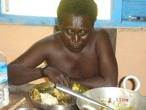
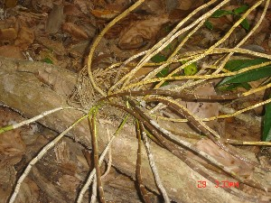
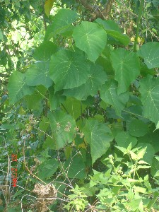
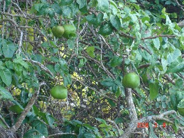
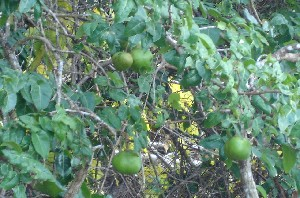

I - i
i- ई- CLT क्लिटिक. clitic, third singular object (exclusive); तृतीय एकवचन कर्मवाचक क्लिटिक (अनन्य). kitɑb-i yek-e ŋu i-rɑcɑke कीताबी येके ङू ईराचाके. Hold the book and keep it with you. किताब को पकड़ो और अपने पास रखो।. SD: grammar, व्याकरण.
iɑretɑːke ईआरेताऽके V क्रि. study; पढ़ो. SEE: ɛloːwbe ‘read’ ‘पढ़ना ऐलोऽवबे ’.
iɑtrɑkɔm ईआत्राकौम MORPH: i-ɑt-rɑ-kɔm. V क्रि. shine of body; sheen; चमकना; शरीर का चमकना.
ibec ईबेच N सं. honeycomb; मधुकोष; छत्ता. SD: edible item, खाद्य सामग्री, habitat, रहन-सहन.
ibeliŋ ईबेलीङ MORPH: i-beliŋ. VAR: ibeviŋ ईबेवीङ. V क्रि. cut something like vegetables using a small knife; छोटे चाकू से सब्ज़ी आदि को काटना.  ŋum beliŋ ङूम बेलीङ. She cut herself. उसने अपने आप को काट लिया।. mino-bi-beliŋe मीनोबी बेलीङे. Chop the potato. आलू काटो।.
ŋum beliŋ ङूम बेलीङ. She cut herself. उसने अपने आप को काट लिया।. mino-bi-beliŋe मीनोबी बेलीङे. Chop the potato. आलू काटो।.
ibelo ईबेलो MORPH: i-belo. ADJ वि. flat; चपटा. SD: attribute, विशेषता.
ibijo ईबीजो N सं. fruit, ripe; पका फल. SD: edible fruit, खाद्य फल.
ibitobɛc ईबीतोबैच MORPH: i-bito-bɛc. N सं. pubic hair; गुप्त बाल. SD: body part term, शारीरिक अंग शब्दावली.
iboe ईबोए MORPH: i-boe. ADJ वि. boiled; उबला हुआ. SD: attribute, विशेषता.
iboɛ ईबोऐ ADJ वि. refined (oil); पक्का तेल. SD: edible item, खाद्य सामग्री.
 iboi ईबोई MORPH: i-boi. VAR: i-boyɑ ईबोया. V-INTR अ क्रि. cook; पकाना; खाना बनाना.
iboi ईबोई MORPH: i-boi. VAR: i-boyɑ ईबोया. V-INTR अ क्रि. cook; पकाना; खाना बनाना.
 iboitnol ईबोईत्नोल MORPH: i-bo-it-nol. ADJ वि. well ripened, mature; अच्छा पका हुआ. SD: attribute, विशेषता.
iboitnol ईबोईत्नोल MORPH: i-bo-it-nol. ADJ वि. well ripened, mature; अच्छा पका हुआ. SD: attribute, विशेषता.
ibule ईबूले MORPH: i-bu-l-e. V क्रि. take it away; इसे दूर ले जाओ.
ibuxu ईबूखू MORPH: i-buxu. N सं. lady; female; महिला; मादा. SD: people, लोग.
iːβe ईऽबे N सं. mother island; अपना द्वीप. SD: habitat, रहन-सहन.
iːcɑilie ईऽचाईलीए VAR: icɑilie ईचाईलीए. V क्रि. tell; कहना; बताना.
icolɑ ईचोला MORPH: i-colɑ. V क्रि. crawl (of insect); रेंगना (किसी कीड़े का). ɖulo-bi-colɑ-kom डूलो बी चोला कोम. The red ant crawls. लाल चींटी रेंगती है।.
icoʈɔrɔ ईचोटौरौ MORPH: ico-ʈɔrɔ. N सं. coast; तट. ʈʰ-ico-ʈɔrɔ ठीचोटौरौ. my coast. मेरा तट. SD: natural environment, प्राकृतिक वातावरण.
-ico/-iššo -ईचो/-ईश्शो CASE का. genitive (alienable); सम्बंध कारक (पृथक). ʈʰ-ico-tɑjiocor ठीचोताजीओचोर. my fish. मेरी मछली. SD: grammar, व्याकरण. NT: postnominal. कारक चिह्न।.
icɔne ईचौने MORPH: i-cɔne. N सं. marrow (white); मज्जा. SD: body part term, शारीरिक अंग शब्दावली.
idoː ईदोऽ ADJ वि. unripe; uncooked; कच्चा; अधपका. SD: cooking & food, खाना-पीना.
iɖellɑ ईडेल्ला ADJ वि. round (stones); गोल पत्थर. SD: attribute, विशेषता.
iɖirim1 ईडीरीम MORPH: i-ɖirim. ADJ वि. black; काला. ɖi iɖirim be डी ईडीरीम बे. He is dark. वह काला है।. SD: attribute, विशेषता. SEE: iɖirim2 ‘hard’ ‘सख्त ईडीरीमhm:{2}’.
iɖirim2 ईडीरीम MORPH: i-ɖirim. ADJ वि. hard; सख्त. SD: attribute, विशेषता. SEE: iɖirim1 ‘black’ ‘काला ईडीरीमhm:{1}’.
 |
iɖiʈ ईडीत N सं. hole; छेद; सुराख. SD: natural environment, प्राकृतिक वातावरण.
iɖop1 ईडोप N सं. raw, unripe; कच्चा, जो नहीं पका. kɔfo iɖop कौफ़ो ईडोप. raw banana. कच्चा केला. SD: attribute, विशेषता. SEE: iɖop2 ‘uncooked (oil); raw’ ‘कच्चा (तेल); कच्चा ईडोपhm:{2}’.
 iɖop2 ईडोप ADJ वि. uncooked (oil); raw; कच्चा (तेल); कच्चा. SD: attribute, विशेषता. SEE: iɖop1 ‘raw, unripe’ ‘कच्चा, जो नहीं पका ईडोपhm:{1}’.
iɖop2 ईडोप ADJ वि. uncooked (oil); raw; कच्चा (तेल); कच्चा. SD: attribute, विशेषता. SEE: iɖop1 ‘raw, unripe’ ‘कच्चा, जो नहीं पका ईडोपhm:{1}’.
ie1 ईए V क्रि. give; देना. SEE: ie2 ‘pain; ache’ ‘दर्द; पीड़ा ईएhm:{2}’; ie3 ‘venom’ ‘विष ईएhm:{3}’.
ie2 ईए VAR: iye ईये; iːye ईऽये. N सं. pain; ache; दर्द; पीड़ा. ʈʰu-ie-bɔm ठूईएबौम. I am in pain. मुझे दर्द है।. mɑʈo-bi-ie-kom माटोबीईयेकोम. pain in the leg; My leg is hurting. पांव में दर्द; मेरे पांव में दर्द हो रहा है।. SD: illness, रोग. SEE: ie1 ‘give’ ‘देना ईएhm:{1}’; ie3 ‘venom’ ‘विष ईएhm:{3}’.
ie3 ईए N सं. venom; विष, ख़ासतौर पर सांप या अण्डमानी कोरोबीतो का. šubi-tɑ-ie-ter-cɛk शूबीताईएतेरचैक. very strong venom of snake. सांप का बहुत तेज़ विष. SD: body product, शरीर से उत्पन्न. NT: The word is used for the venom of a snake and the Andamanese ‘korobito’. इस शब्द का प्रयोग सांप और अण्डमानी कोरोबीतो के विष के लिये होता है ।. SEE: ie1 ‘give’ ‘देना ईएhm:{1}’; ie2 ‘pain; ache’ ‘दर्द; पीड़ा ईएhm:{2}’.
iebi ईएबी V क्रि. took away; दूर ले जाना.
ieleŋ ईएलेङ VAR: iyeːlɑn ईयेऽलान. ADJ वि. without taste; tasteless; bitter; बेस्वाद; फीका; कड़वा. SD: attribute, विशेषता, cooking & food, खाना-पीना.
ietɑrɑfir ईएताराफीर MORPH: ie-tɑrɑ-fir. N सं. a kind of thin cane; एक प्रकार का पतला बेंत जो मचान बनाने के काम आता है. SD: flora, फूल-पत्ती. NT: This cane is used for making platforms.
iɛke ईऐके VAR: yeːkke येऽक्के. V क्रि. catch; पकड़ना. kitɑb-i yek-e ŋu i-rɑcɑke कीताबी येके ङू ईराचाके. Catch (when thrown at a distance) the book and keep it with you. किताब को पकड़ो (जब दूर से फेंकी गई हो) और अपने पास रखो।.
ifile ईफीले MORPH: i-file. N सं. throat; गला. SD: body part term, शारीरिक अंग शब्दावली.
 |
 iji ईजी VAR: eji एजी. V क्रि. eat; खाना.
iji ईजी VAR: eji एजी. V क्रि. eat; खाना.  ɑrɑm konɑbi ijiyom आराम कोनाबी ईजीयोम. Ram is eating a Tendu fruit. राम तेंदू फल खा रहा है।. ijie; ijjiok-e; ijoːkke ईजीए; ईज्जीओके; ईजोऽक्के. Please eat. खाइए।. ŋu-tɛr-bolo-ji-pʰo be ङू तैर बोलो जी फो बे. You are not to eat all of it. तुम्हें इसे पूरा नहीं खाना है।.
ɑrɑm konɑbi ijiyom आराम कोनाबी ईजीयोम. Ram is eating a Tendu fruit. राम तेंदू फल खा रहा है।. ijie; ijjiok-e; ijoːkke ईजीए; ईज्जीओके; ईजोऽक्के. Please eat. खाइए।. ŋu-tɛr-bolo-ji-pʰo be ङू तैर बोलो जी फो बे. You are not to eat all of it. तुम्हें इसे पूरा नहीं खाना है।.  mo cɑybi jikom मो चायबी जीकोम. I eat anything. मैं सब कुछ खाता हूं।.
mo cɑybi jikom मो चायबी जीकोम. I eat anything. मैं सब कुछ खाता हूं।.
 |
 ijibu ईजीबू VAR: ijubu ईजूबू. N सं. housefly; मक्खी. SD: insect & invertebrate, कीट-पतंग एवं अरीढ़ जीव.
ijibu ईजीबू VAR: ijubu ईजूबू. N सं. housefly; मक्खी. SD: insect & invertebrate, कीट-पतंग एवं अरीढ़ जीव.
ijiɸu ईजीफू N सं. bee; मधुमक्खी. SD: insect & invertebrate, कीट-पतंग एवं अरीढ़ जीव.
ijine ईजीने V क्रि. drizzle; rain; shower; बूंदाबांदी होना. ijinekɔm ईजीनेकौम. It drizzles. बूंदाबांदी होती है।.
ijiːtte ईजीऽत्ते V क्रि. shake; हिलना.
 ijubom ईजूबोम VAR: ikubom ईकूबोम; ejibom एजीबोम. V क्रि. fly; उड़ना.
ijubom ईजूबोम VAR: ikubom ईकूबोम; ejibom एजीबोम. V क्रि. fly; उड़ना.
ijukjirɑ ईजूकजीरा MORPH: i-juk-jirɑ. V क्रि. answer; उत्तर देना. i-juk-jirɑ kɔm ई जूक जीरा कौम. He answers. वह जवाब देता है।.
 ijurul ईजूरूल VAR: ojurul ओजूरूल. ADJ वि. sweet; मीठा. SD: cooking & food, खाना-पीना.
ijurul ईजूरूल VAR: ojurul ओजूरूल. ADJ वि. sweet; मीठा. SD: cooking & food, खाना-पीना.
ik- ईक- CLT क्लिटिक. clitic, third singular object (resultative); तृतीय एकवचन क्लिटिक. ɑ-boɑ ɑ-nu ik-jirɑ-tɑtoŋ-e it-šir-o आबोआ आनू ईक्जीरा तातोङे ईत्शीरो. Boa told Nu and got the courtyard washed. बोआ ने नू से कहकर आंगन साफ़ करवाया।. SD: grammar, व्याकरण.
ikɑɲɔrɔke ईकाञौरौके MORPH: ikɑɲɔrɔ-k-e. ADV क्रि वि. fully; completely; पूरी तरह से. SD: quantifier, परिमाण वाचक.
 ikbobiŋ ईक्बोबीङ MORPH: ik-bobiŋ. V क्रि. know; recognize; जानना; पहचानना (किसी चीज़ को).
ikbobiŋ ईक्बोबीङ MORPH: ik-bobiŋ. V क्रि. know; recognize; जानना; पहचानना (किसी चीज़ को).
ikɖuke ईकडूके V क्रि. pluck (from a tree or a plant); तोड़ना (पेड़ या पौधे से).
ikebiliu ईकेबीलीऊ MORPH: ike-bi-liu. V क्रि. tell a lie; झूठ बोलना.
ikʰimil ईखीमील ADJ वि. hot; गर्म. SD: attribute, विशेषता.
ikkɑtɑ ईक्काता MORPH: ik-kɑtɑ. N सं. small piece; छोटा टुकड़ा. SD: attribute, विशेषता.
ikko ईक्को ADJ वि. burnt (wood); जली हुई (लकड़ी). SD: attribute, विशेषता.
ikkobiɑʈ ईक्कोबीआट MORPH: ikko-bi-ɑʈ. N सं. burnt wood; जली हुई लकड़ी. SD: fire, अग्नि.
ikkoɖumfu ईक्कोडूमफू ADJ वि. somewhat big; not very big; थोड़ा बड़ा; अधिक बड़ा नहीं. SD: attribute, विशेषता.
ikkojukʰiɑt ईक्कोजूखीआत MORPH: ikko-jukʰi-ɑt. N सं. head of a burnt wood; जली लकड़ी का सिरा. SD: fire, अग्नि.
ikku ईक्कू VAR: iku ईकू. CLT क्लिटिक. clitic, object of cutting or breaking; क्लिटिक, काटने या तोड़ने के कर्म के लिए. ikkubeliŋ ईक्कूबेलीङ. cut a long piece into small pieces. लम्बी वस्तु को छोटे टुकड़ों में काटना. SD: grammar, व्याकरण.
ikkubeliŋ ईक्कूबेलीङ MORPH: ikku-beliŋ. V क्रि. cut a single long piece into smaller ones such as a thread or a piece of cloth; लम्बी वस्तु (जैसे धागे या कपड़े) को छोटे टुकड़ों में काटना. julu biko beliŋ जूलू बीको बेलीङ. to cut clothes. कपड़ा काटना.
iklɔːtte ईक्लौऽत्ते V क्रि. insert; घुसाना; प्रवेश करवाना.
ikoɖumpʰu ईकोडूमफू ADJ वि. very big; बहुत बड़ा; विशाल. SD: attribute, विशेषता.
ikoirɑli ईकोईराली MORPH: i-ko-rɑ-li. N सं. end of the story; कहानी का अंत. SD: state, अवस्था.
 |
iku ईकू N सं. a kind of plant; एक प्रकार का पौधा. SD: flora, फूल-पत्ती. NT: The roots and twigs of this plant are used for making belts on which shells are sewn to make jewellery. इस पौधे की टहनियां और जड़ें करधनी की रस्सी बनाने के काम में आती हैं।.
 ikʰu ईखू N सं. yellow outgrowth (of a big tree); कल्ले फूटना. SD: flora, फूल-पत्ती. SEE: ɛkɔpʰo ‘sprout of leaves on a tree’ ‘कल्ले निकलना ऐकौफो ’.
ikʰu ईखू N सं. yellow outgrowth (of a big tree); कल्ले फूटना. SD: flora, फूल-पत्ती. SEE: ɛkɔpʰo ‘sprout of leaves on a tree’ ‘कल्ले निकलना ऐकौफो ’.
ikuɖilo ईकूडीलो MORPH: iku-ɖilo. N सं. a small round piece; नन्हा सा गोल टुकड़ा. SD: attribute, विशेषता.
ikʰui ईखूई MORPH: i-kʰui. N सं. leaf; कच्चा पत्ता. SD: flora, फूल-पत्ती.
ikujurɔpʰu ईकूजूरौफू V क्रि. loosen; ढीला करना.
ikʰuni ईखूनी MORPH: i-kʰuni. V क्रि. return; लौटना.
ikʰuʈɔlo ईखूटौलो MORPH: ikʰu-ʈɔlo. N सं. a kind of flower; एक तरह का फूल. SD: flora, फूल-पत्ती.
-il1 -ईल CLT क्लिटिक. conjunctive participle; क्रिया-विशेषण, क्रिया से बना हुआ. meo bɑs sʈop-il ɑkɑ-ʈɔy-il ɑkɑ-ʈɔy-il o mɑlɑi-yo मेओ बास स्टोपील आकाटौयील आकाटौयील ओ मालाइयो. Meo was tired of standing (for a long time) at the bus stop. मियो बस स्टाप पर खड़े-खड़े थक गया।. SD: grammar, व्याकरण. NT: Locative case marker used in narration. स्थानवाचक कारक चिह्न जिसका विवरण अन्य कथाओं में होता है।. SEE: -il2 ‘past marker’ ‘भूतकाल चिह्न -ईलhm:{2}’.
-il2 -ईल V-SUF क्रि प्र. past marker; भूतकाल चिह्न. kɑc-il काचील. (S/he) went after someone. (उसने) किसी का पीछा किया।. ʈʰɑm-bikʰir pʰriŋkos-ɑk ʈʰ-ut cɔne bɔ ठामबीखीर फ्रीङकोसाक ठूत चौने बौ. I went to Strait yesterday. मैं कल स्ट्रेट गया था।. NT: postverbal. This past marker is used mostly in narratives. In non-narratives, the past tense marker is zero as shown above. क्रिया पद के बाद आता है। यह ज़्यादातर कथात्मक लेखों में प्रयोग होता है। अन्य स्थान पर भूतकाल चिह्न शून्य होता है।. SEE: -il1 ‘conjunctive participle’ ‘क्रिया से बना हुआ क्रिया-विशेषण -ईलhm:{1}’.
 |
ile ईले N सं. a kind of leaf; एक प्रकार का पत्ता. SD: flora, फूल-पत्ती.
iletɑmo ईलेतामो MORPH: ilet-ɑmo. ADJ वि. flat; level; समतल. SD: attribute, विशेषता.
iːlɸe ईऽल्फे VAR: ilfe ईलफे. V क्रि. turn over; करवट लेना.
ili ईली V क्रि. urinate; पेशाब करना.
N सं. urine; पेशाब. ilibe ईलीबे. (You) urinate. (तुम) पेशाब करो।. ʈʰ-ɑrɑ-ili ठाराईली. my urine. मेरा पेशाब. ili-b-ɔm ईलीबौम. He urinates. वह पेशाब करता है।.
ilibo ईलीबो V क्रि. suck; चूसना. iliboke ईलीबोके. Suck (it). (इसे) चूसो।.
ilimoʈɔrɔkɔlekʰo ईलीमोटौरौकौलेखो MORPH: ilimoʈɔrɔ-kɔlekʰo. N सं. Onge; ओंगे लोग. SD: people, लोग.
 ilimuʈɔro ईलीमूटौरो VAR: ilumuʈɔro ईलूमूटौरो. N सं. Onge area; Little Andaman; ओंगे लोगों का क्षेत्र; लिटिल अण्डमान. SD: proper noun, व्यक्तिवाचक संज्ञा.
ilimuʈɔro ईलीमूटौरो VAR: ilumuʈɔro ईलूमूटौरो. N सं. Onge area; Little Andaman; ओंगे लोगों का क्षेत्र; लिटिल अण्डमान. SD: proper noun, व्यक्तिवाचक संज्ञा.
ilni ईल्नी N सं. nerve; नस या नाड़ी. ̰ɲ-ilni ञीलनी. your nerve. तुम्हारी नस या नाड़ी. SD: body part term, शारीरिक अंग शब्दावली.
iloboŋ1 ईलोबोङ VAR: iloːboŋ ईलोऽबोङ. N सं. line; लकीर. SD: attribute, विशेषता. SEE: iloboŋ2 ‘long; tall’ ‘लम्बा ईलोबोङhm:{2}’.
iloboŋ2 ईलोबोङ VAR: iloːboŋ ईलोऽबोङ. ADJ वि. long; tall; लम्बा. kʰidi ʈɔŋ-loboŋ-be खीदी टौङलोबोङ बे. This tree is high/ tall. यह पेड़ ऊंचा/ लम्बा है।. SD: attribute, विशेषता. SEE: iloboŋ1 ‘line’ ‘लकीर ईलोबोङhm:{1}’.
ilpʰe1 ईलफे VAR: ile ईले. ADJ वि. one who returns from hunting; वह जो शिकार से लौटकर आता है. SD: hunting & gathering, शिकार एवं संचय सम्बंधी, people, लोग. SEE: ilpʰe2 ‘show ignorance; be indifferent; pretend’ ‘अनजान बनना ईलफेhm:{2}’.
ilpʰe2 ईलफे V क्रि. show ignorance; be indifferent; pretend; अनजान बनना. SEE: ilpʰe1 ‘one who returns from hunting’ ‘वह जो शिकार से लौटकर आता है ईलफेhm:{1}’.
 |
iltotco ईल्तोत्चो N सं. a kind of brown fruit; एक प्रकार का भूरा फल. SD: edible fruit, खाद्य फल.
 |
ilʈoŋ ईलटोङ N सं. a kind of tree that bears brown fruit which is used as a dye; एक प्रकार का पेड़ जिसमें भूरे रंग का फल होता है जो रंगने के काम आता है. SD: flora, फूल-पत्ती.
iluk ईलूक MORPH: i-luk. Etym: Jeru; जेरू. VAR: e-lukʰ एलूख. V क्रि. lift; pull up; get something picked up; उठाना; ऊपर उठाना; उठवाना. ilukke ईलूक्के. Please, lift it up. इसे उठाइये।. NT: This can be used as causative form. प्रेरणार्थक क्रिया बनाने में भी प्रयोग होता है।. SEE: lukbe ‘take someone in your arms’ ‘अपनी बांहों में लो लूक्बे ’.
iːm ईऽम N सं. soft stone; चिकना पत्थर जो सागर के किनारे पाया जाता है. SD: natural environment, प्राकृतिक वातावरण.
imikʰu ईमीखू N सं. inner part of a boat or a tree; right in the middle; नाव, पेड़ आदि का भीतरी हिस्सा; बीचोबीच. SD: space, अन्तरिक्ष.
immixolo ईम्मीखोलो N सं. inside of the bark of a tree; पेड़ की भीतरी छाल. SD: flora, फूल-पत्ती.
imoː ईमोऽ VAR: immɔ ईम्मौ. N सं. kinship term for husband/ wife; husband, wife (term of address); पति, पत्नी के लिये सम्बंध शब्द; पति या पत्नी (संबोधक शब्द). SD: kin term, सम्बंधी वाचक शब्दावली.
impeːle ईम्पऽले V क्रि. call; बुलाना.
 |
 imulu1 ईमूलू MORPH: i-mulu. VAR: mulu मूलू. N सं. egg; अंडा. SD: edible item, खाद्य सामग्री. SEE: imulu2 ‘seed’ ‘बीज ईमूलूhm:{2}’.
imulu1 ईमूलू MORPH: i-mulu. VAR: mulu मूलू. N सं. egg; अंडा. SD: edible item, खाद्य सामग्री. SEE: imulu2 ‘seed’ ‘बीज ईमूलूhm:{2}’.
 imulu2 ईमूलू MORPH: i-mulu. N सं. seed; बीज. SD: flora, फूल-पत्ती. SEE: imulu1 ‘egg’ ‘अंडा ईमूलूhm:{1}’.
imulu2 ईमूलू MORPH: i-mulu. N सं. seed; बीज. SD: flora, फूल-पत्ती. SEE: imulu1 ‘egg’ ‘अंडा ईमूलूhm:{1}’.
imutɛr ईमूतैर MORPH: imu-tɛr. N सं. goods/ things; वस्तुएं/ चीज़. SD: natural environment, प्राकृतिक वातावरण.
in ईन Etym: Bale; बाले. N सं. madam; मैडम. SD: social organization, सामाजिक व्यवस्था.
inci1 ईन्ची V क्रि. follow; go after; पीछा करना. SEE: inci2 ‘go’ ‘जाना ईन्चीhm:{2}’.
inci2 ईन्ची V क्रि. go with a purpose; किसी उद्देश्य से जाना. cɑy bi inci kom चाय बी ईन्ची कोम. What are you going for? तुम किसलिए जा रहे हो? SEE: inci1 ‘follow; go after’ ‘पीछा करना ईन्चीhm:{1}’.
 incinkɔ ईन्चीनकौ NUM संख्या. three; तीन. SD: numeral, संख्यावाचक.
incinkɔ ईन्चीनकौ NUM संख्या. three; तीन. SD: numeral, संख्यावाचक.
 inɛc ईनैच N सं. freshwater fish; मीठे पानी की मछली. SD: fish, मछली.
inɛc ईनैच N सं. freshwater fish; मीठे पानी की मछली. SD: fish, मछली.
injiːtte ईनजीऽत्ते V क्रि. shake; हिलना.
innɑrɔːwlɑm ईन्नारौऽवलाम V क्रि. shower; बरसना.
 ino1 ईनो N सं. tears; आंसू.
ino1 ईनो N सं. tears; आंसू.  ʈʰ-er-ino ठेरईनो. my tears. मेरे आंसू. SD: body product, शरीर से उत्पन्न. SEE: ino2 ‘water’ ‘पानी ईनोhm:{2}’.
ʈʰ-er-ino ठेरईनो. my tears. मेरे आंसू. SD: body product, शरीर से उत्पन्न. SEE: ino2 ‘water’ ‘पानी ईनोhm:{2}’.
 |
 ino2 ईनो N सं. water; पानी. ɑ-tʰire-nu rɛfi-bi ijul nu ino julu kʰulo आथीरे नू रैफीबी ईजूल नू ईनो जूलू खूलो. The children ate rice and drank water. बच्चों ने चावल खाए और पानी पिया।. SD: natural environment, प्राकृतिक वातावरण. SEE: one ‘oil; juice’ ‘तेल; रस ओने ’; ino1 ‘tears’ ‘आंसू ईनोhm:{1}’.
ino2 ईनो N सं. water; पानी. ɑ-tʰire-nu rɛfi-bi ijul nu ino julu kʰulo आथीरे नू रैफीबी ईजूल नू ईनो जूलू खूलो. The children ate rice and drank water. बच्चों ने चावल खाए और पानी पिया।. SD: natural environment, प्राकृतिक वातावरण. SEE: one ‘oil; juice’ ‘तेल; रस ओने ’; ino1 ‘tears’ ‘आंसू ईनोhm:{1}’.
inojulu ईनोजूलू MORPH: ino-julu. N सं. cold water; ठंडा पानी. SD: natural environment, प्राकृतिक वातावरण.
inorɔe ईनोरौए MORPH: ino-rɔe. N सं. mixture, of sweet and saline water; मीठे और खारे पानी का मिश्रण. SD: cultural item, सांस्कृतिक सामग्री.
 inotɑbɛreŋ ईनोताबैरेङ MORPH: ino-tɑ-bɛreŋ. N सं. bucket; बालटी. SD: household, घरेलू. NT: An indigenous container used for carrying water. चिरकाल से चली आ रही ख़ास अण्डमानी बालटी जो पानी लाने के काम आती है।.
inotɑbɛreŋ ईनोताबैरेङ MORPH: ino-tɑ-bɛreŋ. N सं. bucket; बालटी. SD: household, घरेलू. NT: An indigenous container used for carrying water. चिरकाल से चली आ रही ख़ास अण्डमानी बालटी जो पानी लाने के काम आती है।.
 inotɑrɑcɔr ईनोताराचौर MORPH: ino-tɑrɑ-cɔr. N सं. water resource; flowing water as in rivulet; पानी का स्रोत; बहता पानी जैसे कि नाले में. SD: natural environment, प्राकृतिक वातावरण.
inotɑrɑcɔr ईनोताराचौर MORPH: ino-tɑrɑ-cɔr. N सं. water resource; flowing water as in rivulet; पानी का स्रोत; बहता पानी जैसे कि नाले में. SD: natural environment, प्राकृतिक वातावरण.
 |
 inotɛrpʰɔŋ ईनोतैरफौङ MORPH: ino-tɛr-pʰɔŋ. N सं. well; freshwater hole; कुआं; ताज़े पानी का गड्ढा. SD: natural environment, प्राकृतिक वातावरण.
inotɛrpʰɔŋ ईनोतैरफौङ MORPH: ino-tɛr-pʰɔŋ. N सं. well; freshwater hole; कुआं; ताज़े पानी का गड्ढा. SD: natural environment, प्राकृतिक वातावरण.
inotkʰu ईनोत्खू MORPH: ino-ot-kʰu. N सं. drinking water; पीने का पानी. SD: household, घरेलू.
intɑjiɔnɔl ईन्ताजीऔनौल MORPH: in-tɑjiɔ-nɔl. VAR: kʰi-bi-r-nɔl खीबीरनौल. ADJ वि. tasty; स्वादिष्ट. SD: attribute, विशेषता.
intʰirjie ईनथीरजीए V क्रि. taste; चखना.
 iŋkenɑp ईङ्केनाप MORPH: iŋ-kenɑp. N सं. spider legs; मकड़ी के पैर. SD: body part term, शारीरिक अंग शब्दावली, insect & invertebrate, कीट-पतंग एवं अरीढ़ जीव.
iŋkenɑp ईङ्केनाप MORPH: iŋ-kenɑp. N सं. spider legs; मकड़ी के पैर. SD: body part term, शारीरिक अंग शब्दावली, insect & invertebrate, कीट-पतंग एवं अरीढ़ जीव.
iŋotʰudim ईङोथूदीम MORPH: iŋotʰu-dim. V क्रि. peck, with the beak; चोंच मारना.
iːople1 ईऽओपले ADJ वि. full of light; प्रकाशमय. SD: natural environment, प्राकृतिक वातावरण. SEE: iːople2 ‘light’ ‘प्रकाश ईऽओपलेhm:{2}’.
iːople2 ईऽओपले N सं. light (as in daylight); प्रकाश. SD: natural environment, प्राकृतिक वातावरण. SEE: iːople1 ‘full of light’ ‘प्रकाशमय ईऽओपलेhm:{1}’.
iɔnɛtercek ईऔनैतेरचेक MORPH: iɔnɛ-tercek. ADJ वि. sweet; मीठा. SD: attribute, विशेषता.
ipʰirik ईफीरीक MORPH: i-pʰirik. V क्रि. kill; मारना.
ipʰoŋel ईफोङेल MORPH: i-pʰoŋ-el. V क्रि. dig out a grave; exhume; कब्र खोदना.
ipuŋcɑre ईपूङचारे MORPH: ipuŋ-cɑre. ADJ वि. salty; समुद्री खारा. SD: attribute, विशेषता.
iːr ईऽर N सं. wave; लहर. SD: natural environment, प्राकृतिक वातावरण, marine, समुद्री.
irɛːnʈule ईरैऽनटूले V क्रि. collide; टकराना.
irfide ईरफीदे N सं. edge, of a rudder; पतवार का किनारा. SD: boat related, नाव सम्बंधी.
irfiːle ईरफीले N सं. edge, of a weapon; हथियार का किनारा. SD: hunting & gathering, शिकार एवं संचय सम्बंधी.
irjuxu ईरजूख़ू MORPH: ir-juxu. N सं. edge, of an arrow; तीर का कोना. SD: hunting & gathering, शिकार एवं संचय सम्बंधी.
irkʰudoe ईरखूदोए VAR: irkʰuɖoe ईरखूडोए. ADJ वि. round; गोल. SD: attribute, विशेषता.
irluru ईरलूरू V क्रि. burn; जलना.
irpʰir ईरफीर MORPH: ir-pʰir. ADJ वि. sharp; तेज़.
N सं. blade of a type of knife; एक प्रकार के चाकू की धार. SD: attribute, विशेषता, tool, औज़ार.
irpʰul ईरफूल MORPH: ir-pʰul. V क्रि. cover; ढकना.
irteɖe ईरतेडे VAR: irteːɖe ईरतेऽडे. V क्रि. look out; ढूंढ़ना. SEE: ɛrteɖe ‘stare at’ ‘घूरना ऐरतेडे ’.
irub ईरूब MORPH: i-rub. V क्रि. stone, kill by stoning; पत्थर मार-मार कर जान से मार डालना. ʈʰu meo-tɑ tɑjio-bi-rube ठू मेओता ताजीओ बी रूबे. I killed the fish with a stone. मैंने पत्थर से मछली को मार डाला।.
irulu1 ईरूलू N सं. blade of a rudder; पतवार का फाल. SD: boat related, नाव सम्बंधी. SEE: irulu2 ‘eyes, of fish’ ‘आंख, मछली की ईरूलूhm:{2}’.
irulu2 ईरूलू MORPH: i-rulu. N सं. eyes, of fish; मछली की आंख. SD: fish, मछली, body part term, शारीरिक अंग शब्दावली. SEE: irulu1 ‘blade, of a rudder’ ‘फाल, पतवार का ईरूलूhm:{1}’.
irxuɖoːy ईरखूडोऽय MORPH: ir-xuɖoːy. N सं. circle; घेरा; वृत्त. SD: geometric shape, ज्यामितीय आकार.
irxume ईरखूमे MORPH: ir-xume. N सं. front portion, of a bow; धनुष का अग्रभाग. SD: hunting & gathering, शिकार एवं संचय सम्बंधी.
iserep ईसेरेप MORPH: i-serep. N सं. shade; छांव. SD: natural environment, प्राकृतिक वातावरण.
 išire ईशीरे MORPH: išir-e. VAR: it-šire ईत्शीरे. V क्रि. wash; धोओ. VAR: it-cir-e ईतचीरे. ŋ-einširbe ङेईनशीरबे. Wash your body. अपने शरीर को धोओ।. SEE: ɛšire2 ‘wipe’ ‘पोंछना ऐशीरेhm:{2}’.
išire ईशीरे MORPH: išir-e. VAR: it-šire ईत्शीरे. V क्रि. wash; धोओ. VAR: it-cir-e ईतचीरे. ŋ-einširbe ङेईनशीरबे. Wash your body. अपने शरीर को धोओ।. SEE: ɛšire2 ‘wipe’ ‘पोंछना ऐशीरेhm:{2}’.
iširɛ ईशीरै ADJ वि. warm; नर्म. SD: attribute, विशेषता.
isiro ईसीरो N सं. fat of fish; मछली की चर्बी. SD: body part term, शारीरिक अंग शब्दावली.
isiʈɔ ईसीटौ V क्रि. rub; रगड़ना.
 isluye ईसलूये ADJ वि. rotten; सड़ा हुआ. SD: attribute, विशेषता.
isluye ईसलूये ADJ वि. rotten; सड़ा हुआ. SD: attribute, विशेषता.
iso ईसो VAR: isɔjiɔ ईसौजीऔ; išo ईशो; iššo ईश्शो; isso ईस्सो. GEN सं का. his/her (alienable), third singular genitive; इसका या इसकी, तृतीय एकवचन निजवाचक (पृथक).  cɑo-išo-koʈorɛm चाओईशोकोटोरैम. dog’s bowl. कुत्ते का कटोरा.
cɑo-išo-koʈorɛm चाओईशोकोटोरैम. dog’s bowl. कुत्ते का कटोरा.  ʈʰ-išo-rowɑ ठीशोरोवा. my boat. मेरी नाव. SD: grammar, व्याकरण.
ʈʰ-išo-rowɑ ठीशोरोवा. my boat. मेरी नाव. SD: grammar, व्याकरण.
išobo ईशोबो MORPH: išo-bo. N सं. stench; दुर्गंध. SD: attribute, विशेषता. SEE: ešɔbo ‘stench’ ‘दुर्गंध एशौबो ’.
išoi ईशोई VAR: essoi एस्सोई. MORPH: e-ssoi. VAR: ɛšilɑye ऐशीलाये. Etym: Hindi; हिन्दी. V क्रि. stitch; सिलना; सीना.
išorɛfe ईशोरैफे MORPH: išo-rɛfe. N सं. food (his); भोजन (उसका). ʈʰ-icɔ-rɛfe ठीचौरैफे. my food. मेरा भोजन. ɲi-šiyǝ-refe ञीशीयरेफे. your food. तुम्हारा भोजन. SD: edible item, खाद्य सामग्री.
isorɔʈisoʈɔɑ ईसोरौटीसोटौआ MORPH: isorɔ-ʈiso-ʈɔɑ. N सं. turtle-hunting spear; कछुए का शिकार करने वाला भाला. SD: tool, औज़ार.
išɔːʈe ईशौऽते V क्रि. thread a needle; पिरोना.
issɑrɔtiːsoʈowbo ईस्सारौतीऽसोटोवबो MORPH: issɑrɔtiːso-ʈowbo. N सं. pestle; मूसल. SD: cooking & food, खाना-पीना.
išudu ईशूदू MORPH: i-šudu. N सं. entrails; अंतड़ियां. SD: body part term, शारीरिक अंग शब्दावली.
it- ईत- CLT क्लिटिक. clitic, third singular object (exclusive); तृतीय एकवचन कर्मवाचक क्लिटिक (अनन्य). ɑ-boɑ ɑ-nu ik-jirɑ-tɑtoŋ-e it-šir-o आबोआ आनू ईक्जीरा तातोङे ईत्शीरो. Boa told Nu and got the courtyard washed. बोआ ने नू से कहकर आंगन साफ़ करवाया।. SD: grammar, व्याकरण.
-it -ईत GEN सं का. used for extension or production of selves; सम्बंध कारक चिह्न, उत्पत्ति एवं विस्तार के लिए प्रयुक्त. SD: grammar, व्याकरण.
itɑkʰe ईताखे MORPH: i-tɑkʰe. Etym: Bo; बो. VAR: itɑː-kʰe ईताऽखे; itt-ɑxe ईत्ताखे. V क्रि. stop; wait; रुको; इंतज़ार करो.
itberiɑ ईत्बेरीआ MORPH: it-beriɑ. N सं. nice smell; अच्छी ख़ुशबू. SD: attribute, विशेषता.
 itbi ईतबी ADJ वि. yellow; पीला. SD: attribute, विशेषता.
itbi ईतबी ADJ वि. yellow; पीला. SD: attribute, विशेषता.
 itbiːn ईत्बीऽन MORPH: it-biːn. VAR: ɛt-bin ऐत्बीन; itbi ईत्बी. V क्रि. squeeze; निचोड़ना.
itbiːn ईत्बीऽन MORPH: it-biːn. VAR: ɛt-bin ऐत्बीन; itbi ईत्बी. V क्रि. squeeze; निचोड़ना.
itbitʰum ईत्बीथूम MORPH: it-bitʰum. N सं. hook of the fishing arrow; मछली पकड़ने वाले तीर का कांटा. SD: hunting & gathering, शिकार एवं संचय सम्बंधी.
 itec ईतेच MORPH: i-tec. N सं. leaf; पत्ता. SD: flora, फूल-पत्ती.
itec ईतेच MORPH: i-tec. N सं. leaf; पत्ता. SD: flora, फूल-पत्ती.
itekʰo ईतेखो MORPH: it-ekʰo. V क्रि. uncover; उघाड़ना.
itɛrtʰu ईतैरथू MORPH: i-tɛr-tʰu. V क्रि. push; धक्का देना. rowɑ-be tɛr tʰu रोवाबे तैर थू. (He) pushed the boat. डोंगी को धक्का दिया।. jo-reyɑ-k tʰulo जो रेयाक थूलो. Jo pushed Reya. जो ने रेया को धक्का दिया।.
itjio1 ईत्जीओ MORPH: it-jio. V क्रि. eat (it); (इसे) खाओ. SEE: itjio2 ‘scare’ ‘डरना ईत्जीओhm:{2}’.
itjio2 ईत्जीओ MORPH: it-jio. V क्रि. scare; डरना (किसी से). o-ʈʰɑrɑ- jio ओ-ठारा-जीओ. He is scared of me. वह मुझसे डरता है।. cɑy-kʰude-ŋu-ɑrɑ-jioko चाय-खूदे-ङू-आराजीओको. Are you scared of him? क्या तुम मुझसे डरते हो? o-ʈʰɑ ru-ijiko ओ-ठा रू-ईजीको. I scared him. मैं उससे डरता हूं।. SEE: itjio1 ‘eat (it)’ ‘खाओ (इसे) ईत्जीओhm:{1}’.
itkɑtɑ ईत्काता MORPH: it-kɑtɑ. N सं. piece, big; बड़ा टुकड़ा. SD: attribute, विशेषता.
 itkʰibe ईत्खीबे VAR: itkibe ईत्कीबे. V क्रि. distribute; divide; विभाजित करके बांट दो; बांटो.
itkʰibe ईत्खीबे VAR: itkibe ईत्कीबे. V क्रि. distribute; divide; विभाजित करके बांट दो; बांटो.
 itkʰibuke ईतखीबूके V क्रि. distribute it; बांट लो.
itkʰibuke ईतखीबूके V क्रि. distribute it; बांट लो.
itkiye ईत्कीये MORPH: it-kiye. VAR: utkʰie ऊतखीए. V क्रि. turn self; मुड़ना (स्वयं).
itkuɖe ईत्कूडे MORPH: it-kuɖ-e. V क्रि. turn object; उल्टा करना; पलटना.
 itlobe ईतलोबे VAR: itlube ईतलूबे. V क्रि. untie the knot; select; गांठ खोलो; छांटना. VAR: etlobe एतलोबे.
itlobe ईतलोबे VAR: itlube ईतलूबे. V क्रि. untie the knot; select; गांठ खोलो; छांटना. VAR: etlobe एतलोबे.
untie; choose; खोलना; चुनना.
itlub ईतलूब V क्रि. grow; बढ़ना.
 itlup ईत्लूप V क्रि. pick stones; कंकड़ बीनना.
itlup ईत्लूप V क्रि. pick stones; कंकड़ बीनना.  it-lup-e ईत्लूपे. Clean it (stones from dal). बीनो (कंकड़ दाल से)।.
it-lup-e ईत्लूपे. Clean it (stones from dal). बीनो (कंकड़ दाल से)।.
itmuʈʰoke ईतमूठोके MORPH: it-muʈʰo-ke. VAR: eʈ-muʈʰ-o-ke एटमूठोके; itmuʈʈɔːkke ईतमूट्टौऽक्के. V क्रि. hold, in fist; मुट्ठी में पकड़ना.
itnol ईत्नोल MORPH: it-nol. VAR: ɛt-nol ऐत्नोल. V क्रि. want/ demand; मांगना.
 itsɛrep ईत्सैरेप MORPH: it-sɛrep. VAR: it-šɛrep ईत्शैरेप. V क्रि. cut the top of a tree; पेड़ का ऊपरी हिस्सा काटना.
itsɛrep ईत्सैरेप MORPH: it-sɛrep. VAR: it-šɛrep ईत्शैरेप. V क्रि. cut the top of a tree; पेड़ का ऊपरी हिस्सा काटना.
ittɑkʰe ईत्ताखे ADV क्रि वि. now; अब; अभी. kʰilel ittɑkʰe ʈʰio-b-e खीलेल ईत्ताखे ठीओबे. I will be here now. मैं अब यहाँ होऊंगा।. SD: time, समय.
ittʰɑxe ईत्थाखे ADV क्रि वि. still; till now; अभी तक. SD: time, समय.
ittʰe ईत्थे PRN सर्व. third singular; तृतीय एकवचन.  ittʰe ti kʰɑmol wɑom ईत्थे ती खामोल वाओम. He will come now. वह अब आएगा।. SD: pronominal, सर्वनाम.
ittʰe ti kʰɑmol wɑom ईत्थे ती खामोल वाओम. He will come now. वह अब आएगा।. SD: pronominal, सर्वनाम.
itʈɔl ईत्टौल MORPH: it-ʈɔl. V क्रि. break away completely; पूरी तरह से तोड़ना.
itʰude ईथूदे V क्रि. scratch; खुरचना.
itxuɖoːy ईत्खूडोऽय MORPH: it-xu-ɖoːy. N सं. ring; अंगूठी. SD: costume & adornment, आभूषण एवं श्रृंगार.
iʈʈɔːle ईट्टौऽले VAR: it-ʈɔl-e ईत्टौले; ut-ʈɔl-e ऊत्टौले. V क्रि. pluck (a flower); तोड़ना (फूल).  ʈɔlobikʈole टौलोबीक्टोले. Pluck the flower. फूल तोड़ो।.
ʈɔlobikʈole टौलोबीक्टोले. Pluck the flower. फूल तोड़ो।.
 iʈu ईटू VAR: iʈop ईटोप. V क्रि. steal; चोरी करना. ʈop-om टापोम. (He) steals. (वह) चुराता है।.
iʈu ईटू VAR: iʈop ईटोप. V क्रि. steal; चोरी करना. ʈop-om टापोम. (He) steals. (वह) चुराता है।.
iʈʰuɖe ईठूडे V क्रि. hit; टक्कर मारना.
 iʈʰule ईठूले MORPH: i-ʈʰule. V क्रि. pound; कूटना.
iʈʰule ईठूले MORPH: i-ʈʰule. V क्रि. pound; कूटना.
iulo ईऊलो MORPH: i-ulo. ADJ वि. loose; ढीला. SD: attribute, विशेषता.
iximil ईखीमील N सं. hot water; गर्म पानी. SD: natural environment, प्राकृतिक वातावरण.
 iyɑ ईया INTJ वि बो. yes; हां. SD: particle, निपात.
iyɑ ईया INTJ वि बो. yes; हां. SD: particle, निपात.
iyɑːrettɑː ईयाऽरेत्ताऽ N सं. teachings; lecture; सीख या उपदेश. iyɑːrettɑːkke ईयाऽरेत्ताऽक्के. Lecture/teach him. (इसे) पढ़ाओ।. SD: life, जीवन.
iyɛke ईयैके V क्रि. roast; भूनना.
iyoːwme ईयोऽवमे N सं. shower; बरसना. SD: natural environment, प्राकृतिक वातावरण.